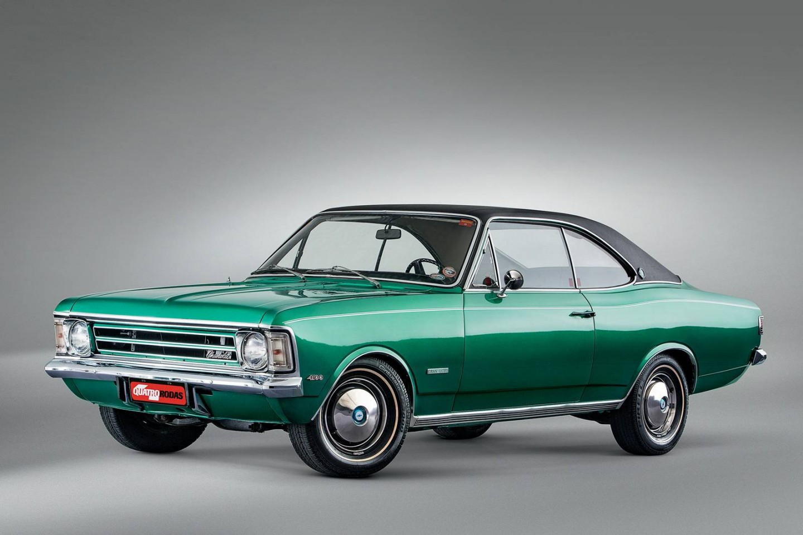
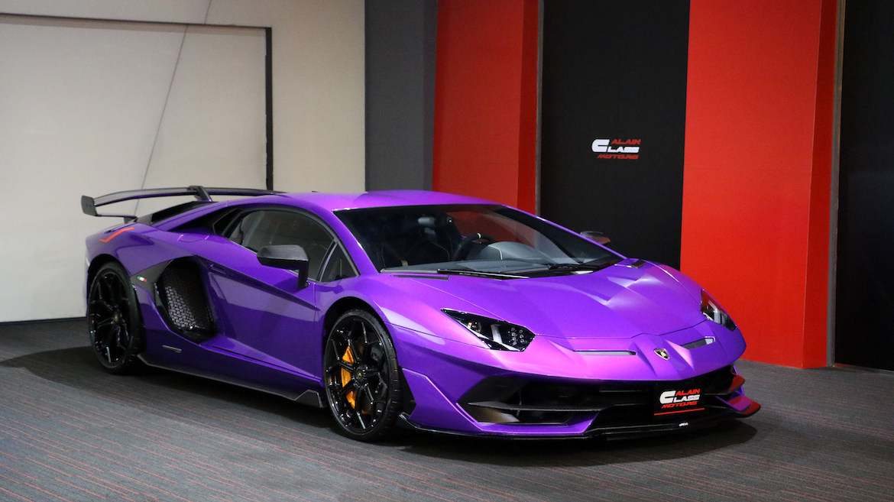

Bem-vindo ao Carros Icônicos
Conheça alguns dos carros mais marcantes da história automotiva, de clássicos nacionais a supermáquinas modernas.
Modelos em Destaque
Chevrolet Opala
O Chevrolet Opala foi um dos carros mais emblemáticos da história automotiva brasileira. Lançado em 1968, ele combinava um design inspirado no modelo alemão Opel Rekord com motores potentes, como o famoso 6 cilindros em linha. Foi um sucesso tanto nas ruas quanto nas pistas, especialmente nas categorias de arrancada e turismo.
Seu interior espaçoso e acabamento refinado o tornaram símbolo de status entre as décadas de 70 e 80. Até hoje é um clássico cultuado por colecionadores e entusiastas
Fusca Novo

O New Beetle, lançado em 1998, é a releitura moderna do icônico Fusca, o carro mais vendido da história da Volkswagen. Com design retrô e formas arredondadas, o modelo trazia elementos que remetiam ao clássico, mas com tecnologia e segurança modernas. A versão renovada do Fusca foi um sucesso global, sendo especialmente popular entre os jovens e o público nostálgico.
Apesar de ter saído de linha em 2019, o New Beetle marcou uma geração e reforçou o legado de um dos carros mais amados do mundo.
Fiat 500
O Fiat 500 é um verdadeiro símbolo do design italiano. Sua versão original foi lançada em 1957 como um carro urbano compacto e acessível para o pós-guerra. A reedição moderna, apresentada em 2007, manteve as dimensões compactas e o charme do modelo clássico, mas com motorizações eficientes, interior estilizado e diversas opções de personalização.
É um carro voltado para quem busca estilo, economia e praticidade, sendo ideal para ambientes urbanos. Além disso, há versões elétricas do modelo, como o 500e, que reforçam seu compromisso com o futuro da mobilidade.
Lamborghini Aventador
A Lamborghini Aventador é um superesportivo de alto desempenho que representa o ápice da engenharia e design da marca italiana. Lançado em 2011, o Aventador impressiona com seu motor V12 de até 770 cavalos de potência, aceleração de 0 a 100 km/h em menos de 3 segundos e velocidade máxima superior a 350 km/h. Seu visual agressivo, com linhas angulares e portas que se abrem para cima, é inconfundível.
É um carro feito para emocionar e foi produzido até 2022 como o último Lamborghini com motor V12 naturalmente aspirado antes da eletrificação da marca.
Informações Técnicas
| Carro | Ano de Lançamento | Potência (cv) | Média de Preço (R$) |
|---|---|---|---|
| Chevrolet Opala | 1968 | 140 - 200 cv | R$ 40.000 - R$ 120.000 |
| Fusca Novo | 1998 (reedição) | 50 - 100 cv | R$ 35.000 - R$ 70.000 |
| Fiat 500 | 2007 (reedição) | 69 - 135 cv | R$ 40.000 - R$ 100.000 |
| Lamborghini Aventador | 2011 | 700 - 770 cv | R$ 3.000.000 - R$ 4.000.000 |